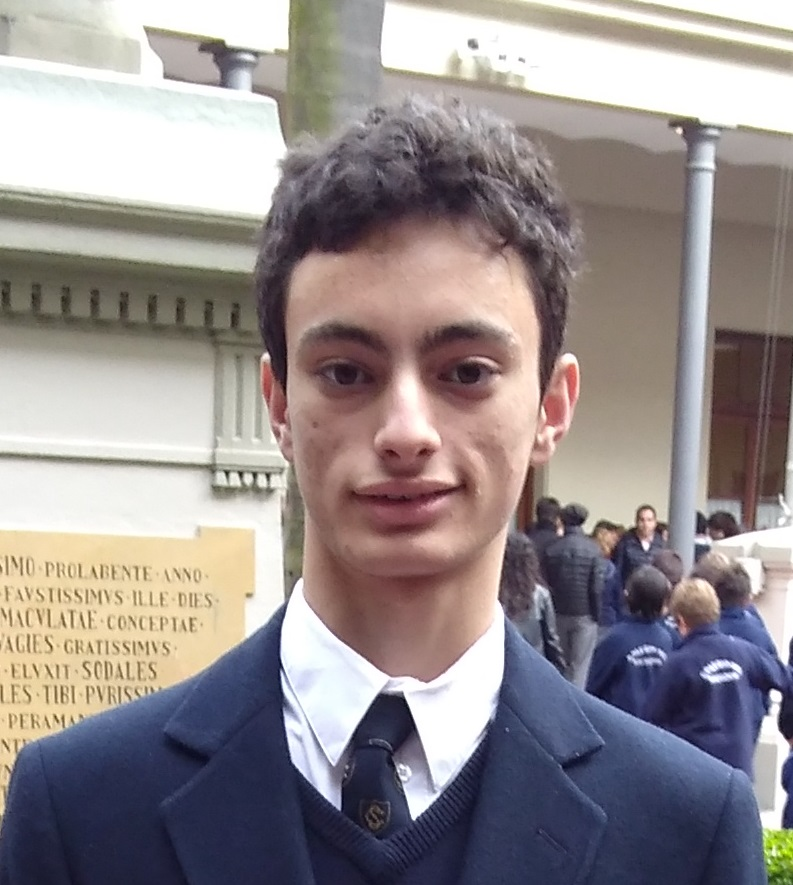

Ignacio Garcia Pizales
Student at University of Buenos Aires
DATOS PERSONALES
Cellphone: +54 9 11...
Address: Anchorena
Contact Mail: ignaciogp08@gmail.com
Licenciatura en ciencia de datos en la
Facultad de Ciencias Exactas y Naturales
(Universidad de Buenos Aires)
Ingeniería Informática en Facultad de
Ingeniería (UBA)
Bachillerato en Colegio del Salvador (Exactas)
IDIOMAS
- Ingles Avanzado, First Certificate Cambridge,
en preparación para CAE
- Alemán Básico (cursando)
LENGUAJES DE PROGRAMACIÓN
- Python experto especializado en librerias para datos
- SQL Avanzado
- R experto
- Matlab medio
- HTML, CSS medio
- C medio
- C# medio
- Javascript Básico
HABILIDADES
- Programación en los lenguajes mencionados
- Reparación de computadoras, celulares, notebooks
- Creatividad, imaginación, trabajo en equipo
- Inversiones bursátiles y crypto
- Emprendedurismo
CERTIFICACIONES
CURSOS REALIZADOS
- Machine Learning A-Z™: Hands-On Python & R In Data Science
- CS50AI: CS50’s Introduction to Artificial Intelligence with Python
- Machine Learning
- Neural Networks and Deep Learning
- Data Analytics - Coder House
CURSOS EN PROGRESO
- Innovation Experience - SHIFT
- UBA IALAB
EXPERIENCIAS PREVIAS
CompuServiceOK
Service de mantenimiento y mejora de computadoras, notebooks, celulares
VAba
Consultoría especializada en desarrollo web
Redes Sociales
LinkedIn Instagram Whatsapp